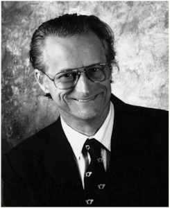

|  | Il progetto Xanadu è stato tra i primi progetti informatici a fare uso di ipertesti. Fondato nel 1960 da Ted Nelson, il progetto ha attraversato una lunga fase di implementazione che si è conclusa soltanto nel 1998 con la pubblicazione del software completo. Durante il suo primo anno di dottorato di ricerca ad Harvard, Ted Nelson cominciò ad utilizzare il sistema che conteneva l'abbozzo di quello che doveva diventare il progetto Xanadu: un programma di scrittura testi (il termine word processor comparve diversi anni più tardi) capace di memorizzare più versioni dello stesso scritto (ovvero tutta la cronologia delle modifiche) e capace di visualizzare le differenze tra le diverse versioni. Nelson non riuscì all'epoca a portare a termine l'implementazione, tuttavia una dimostrazione del sistema si dimostrò sufficiente per attirare l'interesse sul progetto. |